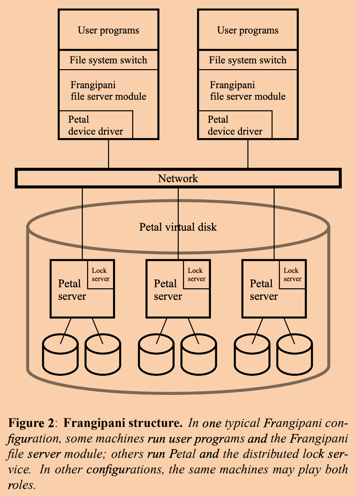

本文主要是我阅读这篇论文过程中做的笔记，以及自己的思考。
该篇论文是在1997年发表的，虽然是个很老的系统，但是里面对于分布式锁、缓存一致性等等的设计思想还是值得学习的。
简介
Frangipani最初是一个为实验室内的研究人员进行更容易的文件分享而设计的分布式文件系统，该文件系统的特点有：
- 保证多用户之间对文件系统的视图一致。
- 可以很简单的通过增加服务器来提升文件系统的存储容量以及吞吐量，无需修改已有服务器的配置，或者中断他们的操作。
- 系统管理员可以很轻松的新增用户，而不用考虑那个机器来存储和管理该用户的信息。
- 系统能够在不停机的情况下创建完整的文件系统的快照。如果需要，用户可以通过访问快照来访问那些意外删除的文件。
- 该文件系统能够自动应对机器、网络和磁盘错误，能够自动从错误中恢复。
系统架构
Frangipani是构建在Petal之上的两层结构。
系统组件

Frangipani可以将Petal抽象为一个虚拟磁盘，该磁盘以块为单位进行读取和写入，具有2^64大的地址空间，并且提供了快照功能。因为Petal支持通过增加服务器来对容量进行横向扩展，所以自然Frangipani继承了该特性。
用户程序通过标准的操作系统调用接口来访问Frangipani。
Frangipani保证对文件发生的变更对所有其他用户可见。但是和本地的Unix文件操作系统提供的语义一样：对一个文件的变动会先存放在本地内核中的缓冲池中，在下次fsync或者sync系统调用发生前，系统并不保证这些变动数据会落盘。
但是Frangipani和本地文件系统不同的是：
- 对于元数据，Frangipani可以可选的保证在系统调用返回时元数据的变更已经持久化。
- 另外，元数据中的上次访问时间并不精确，只是个大概值。以此避免在每次数据读取的时候，都修改文件元数据。
Frangipani文件服务器模块是运行在用户机器上的操作系统中的，在操作系统看来它就是另一个可用的文件系统的实现。各个Frangipani服务器通过使用自己的Petal驱动来访问共享的底层的Petal存储服务，虽然文件内容是共享的，但是不同的Frangipani服务器使用不同的区域来存放自己的log，这使得在宕机后，可以让别的Frangipani服务器来访问其log进行故障恢复。
不同Frangipani服务器之间没有交流，Frangipani服务器只需和Petal还有Lock Service进行交互，这使得Frangipani服务器的增删变的容易。
由此可见，因为所有的逻辑都是在用户端实现，所以对于Petal而言，它并不理解自己所存储的数据的含义，只是单纯的提供了可扩展、容错的分布式存储服务而已。基于存储服务，Frangipani提供了目录、文件等文件系统的概念。
上图中提到的锁服务（lock service）也是一个分布式、容错、可拓展的集群，为Frangipani服务器提供了读写锁的协作服务。而该锁服务是Frangipani实现缓存一致性的关键。
安全性考虑
如果根据上图所示将Frangipani的逻辑跑在用户端，那么就得要求用户的机器是可信任的，否则用户可能会修改Frangipani的逻辑做一些恶意的操作。
磁盘布局
Petal内部数据的是以块进行读写的，一个块大小为64KB。

上图展示了Frangipani是如何对Petal进行分区使用的：
- 第一个区域（1TB）保存共享的配置参数和内部信息；
- 第二个区域（1TB）保存日志，每个服务器拥有私有的日志空间，目前划分了256个空间，因此最多支持256个Frangipani服务器；
- 第三个区域（3TB）保存位图（allcation bitmap），追踪剩余区域中的空闲块；
- 第四个区域（1TB）保存inode，每个inode大小为512B。每个文件都有一个inode，保存了文件的元信息，包括时间戳和指向实际存储文位置的指针等。例外的是，链接文件直接将其数据存储在inode中。位图中的位和inode之间存在固定的映射关系。
- 第五个区域（128TB）保存小数据块，每个数据块为4KB。文件会先存储在该区，只有当文件的大小超过16个小数据块（64KB）的时候，才会开始是用大数据来存储。
- 剩余区域保存大数据块，每个数据块为1TB。
日志和恢复
Frangipani使用WAL来简化错误恢复和提升性能。日志中仅包含元数据的变动信息，并不包含文件内容。
当一个Frangipani服务器需要对某个文件的元数据进行修改的时候，它先会创建一个log来描述本次更新操作，并且将该log写入内存。这些内存中的log会周期性的按照顺序写入Petal（可选的可以让日志不写入内存每次直接写入Petal）。而存在Petal上的log也会周期性的进行应用（大约30秒）。
每个log的大小是固定为128KB的。因为为每个Frangipani分配的log区域总量有限，所以log在Petal上是通过环进行组织的。当某个Frangipani的log区满了，那么Frangipani会回收掉最老的25%的log的空间。如果被回收的这些旧log中有还没有被应用的，那么会先等这些log被应用了之后才会进行清理。
如果Frangipani服务器宕机了，那么系统最终会检测到该事件（没有响应），然后运行recovery程序，来将该Frangipani的未应用的log都进行应用，然后释放该宕机的Frangipani服务器所持有的锁，并清理其所有的log。因为log和文件内容都存在共享的Petal中，所以只要底层的Petal服务依旧可用，那么该系统能够允许任意数量的Frangipani服务器宕机。
因为log是由环状结构进行组织的，为了能找最后一个log，设计者为每个log的每512字节增加一个单调递增的LSN。所以最后一个log的位置就是遍历过程中首次出现LSN比当前log小的log的位置。
为了让日志和恢复能够正常的工作，还需要遵循以下的约束：
- 一个写锁在释放前必须要将所有缓存中的修改数据写入Petal。在正常执行时，该行为是由锁持有者来完成的。在发生宕机时，是由recovery程序来完成。
- recovery程序不能重复应用log。为了实现该约束，设计人员，为每512字节的元数据块赋予一个版本号，占据多个块的元数据将拥有多个版本号。在log中会包含操作所对应的元数据的版本号，在recovery过程中，如果一个元数据块的版本号大于等于log中的版本号，那么直接跳过。
- 对特定Frangipani服务器，任何时刻只有一个recovery程序可以运行。这是通过锁服务的写锁来保证的。
在用户不使用fsync的情况下，Frangipani并不保证数据不会丢失。
同步和缓存一致性
为了避免false sharing，系统确保单个磁盘区域中不会包含超过一个数据结构。
Frangipani中锁的粒度为每个文件一个锁（通过为inode加锁），每个log一个锁。
当一个操作需要获取多个锁的时候，分为两阶段来实现：
- 服务器决定需要使用到那些锁。
- 按照这些锁对应的inode的地址顺序，依次申请锁。以此来避免死锁。
涉及写锁的正常的操作流程如下：
1 | ACQUIRE write-lock |
在Frangipani服务器中的lock table中保存有其持有的所有锁的状态，状态可能有：busy、idle。busy意味着当前正在对相应文件进行修改，而idle相反。如果此时有另一个服务器也想要获取这个锁，他会先向lock service发起请求，lock service查询得知已经有人占有这个锁了，就会发请求让持有者释放锁，此时如果持有者的锁状态为busy，那么就得等他变为idle时才会释放锁。
涉及读锁的正常操作流程如下：
1 | ACQUIRE read-lock |
即在没有持有锁的情况下，不允许持有缓存。以此来保证缓存一致性。
锁服务
Frangipani中的锁在没有竞争的情况下是会被一直持有的。
锁服务为了应对锁持有者宕机，采用lease机制：当某个Frangipani服务器申请到锁的时候，所有申请到的锁都会伴随着一个lease，每个lease会在30秒后过期，除非锁持有者要求刷新lease，那么lease又会重新计时30秒。锁持有者必须不断地去刷新lease，不然锁服务将会认为锁持有者已经宕机。
当网络发生故障的时候，即使锁持有者还活着，但是无法刷新其lease。此时当lease过期时，锁持有者会丢弃其所有持有的锁还有缓存中的数据。并且如果丢弃的缓存中存在修改的数据，那么Frangipani会为接下来的来自用户所有操作都返回错误。只有重新挂载该文件系统才能清除异常。这么做是为了避免用户无意的忽视了发生的故障。
锁服务是通过一个集群来实现的，集群节点间使用Paxos算法来提供可扩展性以及容错性。
锁服务将锁用表的形式组织，表的名字为ASCII码字符串。表内的每个锁都通过一个64位的整数标识。每个Frangipani文件系统对应一个锁表。
为了减少锁服务器中内存的消耗，如果一个锁在一个小时内都没有被使用，那么该持有锁的Frangipani服务器将会放弃持有该锁。
锁集群节点间会将集群服务器信息、每个锁服务器所负责处理的锁列表信息、那些和锁服务建立连接的Frangipani服务器信息，进行共识备份。考虑到效率，所有锁会被分为100组，然后分散给所有的锁服务器处理。分配会保证，每个锁服务器所负责的锁数量是平衡的，每个锁只会被一个服务器所负责。
当有节点加入或者移出集群时，需要进行锁任务重分配：
- 那些最终会减少锁的服务器，先丢弃掉那些将要减少锁。
- 那些会增加锁的服务器，会询问这些新增的锁所对应的Frangipani服务器，来获取这些锁的最新状态。
当一个Frangipani服务器宕机了，那么只有当必要的恢复程序执行后，其所有持有的锁才能被释放。锁服务会因为lease过期而得知Frangipani服务器宕机了，然后它会委托另一个Frangipani服务器去执行recovery程序，等到执行完后，释放所有属于宕机服务器的锁。 该被委托的服务器会被授予对于那个宕机服务器的log的锁，以此保证同时只有一个恢复程序在执行。当然，如果不幸的，该被委托的服务器也宕机了，那么新的服务器将会被委任进行恢复任务。
通常来说，Frangipani能够应对网络分区：
- Petal集群如果发生网络分区：拥有超过半数的Petal服务器的分区还能继续正常运行。但是可能这个分区中的服务器上没有包括全部的数据，所以部分文件可能访问不了。
- 如果Frangipani集群和锁服务集群之间发生了网络分区：因为锁持有者无法刷新lease，所以锁服务会认为持有锁的Frangipani服务器已经宕机，然后启动恢复程序。
- 如果Frangipani和Petal之前发生了网络分区：那么Frangipani服务器将无法读写文件。
以上情况下都能保证数据不被破坏，只要分区被修复，整个系统还能重新继续工作。
通过lease来实现锁，可能会遇到一个棘手的情况，就是如果锁服务器上的时间比Frangipani服务器上的时间快了t，那么在这t时间内有可能出现，锁服务器认为lease到期了，但是Frangipani认为还有效。如果此时锁服务器将锁又分配给了另一个服务器，因为Petal并不知道lease，所以那么就有可能出现对某个文件的并发写的问题。
论文中提供了两个解决思路：
- 每一个向Frangipani发出的写请求中都加上一个字段
expriation timestamp，该字段的值为该写请求被生成时的时间减去t。然后修改Petal的代码，让Petal能够拒绝expriation timestamp小于其当前时间的请求。其中t是Petal和Frangipani服务器之间的时钟误差。 - 将锁服务直接运行在Petal服务器上，然后每次写请求中都包含一个lease id，这样Petal和锁服务之间就不存在时钟误差问题了，可以始终按照自己机器上的时间计算过期时间得出一致的结果。
附录：一些问题
什么是false sharing?
该系统中Frangipani服务器是以512字节为单位从Petal中进行读写数据的。如果在一个512字节的块中存储了两个不相关的数据结构X和Y，当两个Frangipani服务器分别想要同时修改X和Y的时候，那么他们可能会激烈的反复竞争锁，引起不必要的消耗。